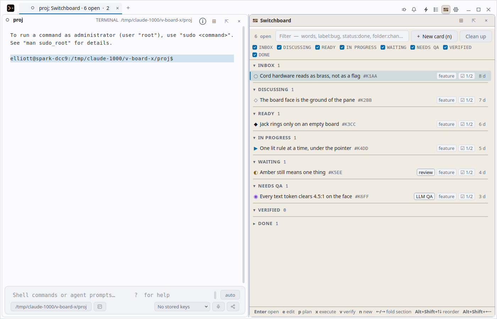
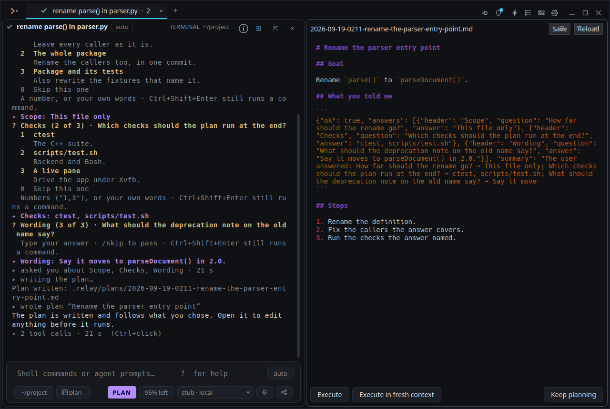

Change the model. Keep the work.
Switch during a conversation, choose the reasoning level the model supports, or swap back with Alt+S. Claude Code and Codex guests can delegate into Relay’s own subagent tabs.
A Linux terminal for agentic coding. Commands go to your shell, everything else goes to the agent, and Relay shows you which before you press Enter. It works the moment it opens on an included allowance, and runs on your own API keys when you want them. No account, no telemetry.
A .deb for Ubuntu 24.04, Ubuntu 26.04 and Debian 13, or a source build.
Agent commands run as your user; approval settings depend on your build —
read this first.
Every line you type is routed to one of these two. Try the other.
$ git status --short
M src/greet.c
?? notes.md
exit 0 · 40 ms · your shell, nothing sent anywhere
✦ why does the build fail?
ran make · read greet.c · wrote greet.c
Missing semicolon after printf(...) on line 6. Patched greet.c and rebuilt — it compiles.
2 tool calls · 1.4 s · glm-5.3 on your key
git status --short
Development update ·
Recent changes on main. These may be ahead of the downloadable beta;
check the release notes for your package.
Switch during a conversation, choose the reasoning level the model supports, or swap back with Alt+S. Claude Code and Codex guests can delegate into Relay’s own subagent tabs.
Switchboard cards, Options, Actions and Sessions now have agent consoles. Discuss a card, plan its work or execute it with the conversation attached to that card.
Idle panes can leave an away recap after work finishes. Sessions keeps saved conversations searchable, and Ctrl+Enter in an empty prompt continues a stopped turn.
Choose approval behavior, dim surrounding panes while you work, and find slash commands in Actions. Folded diffs and output that rewraps make longer sessions easier to read.
Pair with a short code and PIN as well as a QR code. Your paired phone can browse cards and threads, act on work, and bring questions that need you into its inbox.
Open Actions with Ctrl+Shift+A, Sessions with Ctrl+Shift+Y and the Switchboard with Ctrl+Shift+S. These are Relay’s default shortcuts; other keymap presets are available.
Keep the shell, the conversation and the work record together. Read an answer beside the command that prompted it, change models without starting over, and keep your project’s decisions in git.
In a terminal pane, prompts, answers, tool calls, diffs and command output print into the scrollback in their own colours, folded where they run long. The agent reads the same screen you do, so when you hand a pane over (Ctrl+Shift+J) it can drive vim, a REPL or an installer there.
Relay renders the terminal itself, on the libghostty-vt core, which ships in every package from 0.1.0-beta.3 on. That is what lets the agent see the screen and the scrollback, mask a password in the prompt box and fold a long tool call. And it is fast: 200 MB of output in about 1.2 s where Konsole takes 3.6 s on the same machine.
Relay keeps the list of what you asked, in your words, outside the model's memory. Multi-part asks
become tasks, compaction carries the open ones forward verbatim, and a turn ends with
Tasks 3/5 (1 deferred, 1 failed) rather than silence.
The Switchboard keeps work cards, plans and memories as Markdown in your repository, with
append-only threads. New boards use .switchboard/; existing issues/
boards still work. Agents claim work, record evidence and hand it off for verification.
Use your own provider key, a compatible endpoint or a local model server. Claude Code and Codex can also be the pane’s agent through their installed command-line tools and existing login. Relay Free supplies an included allowance when you want to try Relay without a key.
Pair a phone from a QR code or, in current development builds, a short code and PIN: an end-to-end encrypted session over a rendezvous that only ever sees ciphertext. The phone sees the pane, types into the same routed prompt box and dictates. Invite someone else with a role and an expiry, admit them by hand, and take the keyboard back by typing.
› the terminal half ✦ the agent half
vim, htop, ssh, tmux, Claude Code and Codex run in it as they do anywhere else. Relay renders the terminal itself instead of embedding someone else's. Packages from 0.1.0-beta.3 on ship the libghostty-vt core, which takes about 1.2 s to show 200 MB of output against Konsole's 3.6 s; a plain source build uses the libvterm core unless you build the fast one. Shell integration (OSC 7 and OSC 133) tracks the working directory and marks prompts, commands and exit codes.
Clicking the terminal selects text, scrolls and follows links; it never takes the keyboard. Full-screen programs such as vim, less and ssh offer Take control (Ctrl+H) instead of grabbing it.
It runs commands as your user and edits workspace files. Actions print as they happen and Esc stops the agent; stopping does not undo changes. Current development builds offer a first-run choice of approval behavior, editable in Options › Security. Shell commands are not sandboxed.
When a program turns echo off, the prompt box becomes a masked field and writes the line straight to that program. The text never enters prompt history, the queue, session files, logs or any model prompt, and it is wiped as soon as it is sent.
git status runs in the shell; why is this build failing? goes to the
agent. Type ! or * to force one line, Ctrl+I to cycle auto → terminal →
agent. The caret and the syntax colouring show where the line is going before you press Enter.
Shift+Tab puts the prompt in plan mode: the agent investigates read-only, asks you the questions it has as numbered choices, and writes a plan that opens beside the pane for editing. Execute, Execute in fresh context or Keep planning.
Every request you make is tracked, and multi-part asks are split into tasks. A chip counts them
— Tasks 3/5 (1 deferred, 1 failed) — and the list shows your words next to what the
agent actually did.
/conversations searches every saved conversation and Relay's terminal history: prompts,
answers, tool calls, the commands Relay ran and their output. Ctrl+F searches the pane in front
of you. The index is a local SQLite file.
Pick a model in the pane, or use /model. Current development builds group models
by class, offer each model’s own reasoning levels, and let you rank your choices. Use
/swap (Alt+S) to switch models while keeping the conversation. Provider keys,
subscriptions and local endpoints can all take part.
A task can go to a subagent with its own conversation and tab; the task list shows which one each is working on. Alt+A opens this pane's subagents, Ctrl+Shift+X stops them all.
Pick a host from ~/.ssh/config or type user@host. The pane knows the host
it is on, prompt marks keep working, and the agent keeps its tools: it runs commands there and reads
and edits remote files, showing the diff before it writes.
Pick either in the model box and it becomes the pane's agent, driven through its own headless interface on your existing subscription. Terminal lines still go to your shell; nothing is typed into a TUI or scraped from one.
Options › Local models finds, tests and adds a model server on this machine, and the agent can set one
up itself. /local moves a pane onto it and back.
Quit and start again: windows, tabs and panes come back in their directories, on the same models, with their conversations reattached. The shells are new; nothing is re-run.
Hold Right Alt, or click the microphone chip, and Relay records with whatever capture tool your desktop has. The transcript (an OpenRouter key does the work) is inserted at the cursor and never submitted for you.
Relay's prompt box starts Bash in each pane, and the optional integration script ships for Bash and Zsh. Fish and other shells run the usual way — start them in the terminal and take the keyboard with Ctrl+H; you lose the routing and the marks, not the shell.
Each pane has its own shell, prompt and conversation. Move panes by dragging the grip or with Ctrl+Alt+arrows, open folders and file previews beside the terminal, and drive everything from the actions palette. Keymap presets for Relay, Warp, VS Code and Konsole; Ctrl+? lists every shortcut.
No analytics, no crash reporting and no Relay account. Agent requests use the provider selected for that job; Relay Free uses a gateway with metadata-only logs. Remote sharing and other network tools connect when you use them. AGPL-3.0-or-later.
Screenshots show earlier beta builds; controls and layout are evolving.


/conversations)

Beta. Packages are built and tested by CI for every release and
published on GitHub Releases,
with SHA256SUMS beside them. Linux only for now; the AUR packages are prepared but
not yet published.
Pick the .deb for your distribution and architecture (amd64 or arm64), then:
sudo apt install ./relay_*_ubuntu24.04_amd64.deb
relay --workspace ~/projectOpen it, ask the agent something, and it answers: the included Relay Free allowance needs no key.
Qt and Python. The two optional viewers can be left out.
sudo apt install build-essential cmake ninja-build python3 \
python3-cryptography libsecret-tools qtbase5-dev
# optional: file-preview highlighting and PDF preview
sudo apt install libkf5syntaxhighlighting-dev qtpdf5-devbuild.sh configures, builds and runs the tests.
git clone https://github.com/elliottash/relay-terminal
cd relay-terminal
./scripts/build.sh
./build/relay --workspace ~/project
cmake --install build # optional, installs to ~/.localCMake 3.22+, a C++17 compiler, Qt 5 or Qt 6, Python 3.10+ with cryptography, and Bash.
KDE Frameworks is not required:
Relay's terminal is its own. Syntax highlighting and PDF preview are optional.
Relay's engine runs every pane. Packages from 0.1.0-beta.3 on ship the libghostty-vt core as the default; a source
build gets the libvterm core, which needs nothing extra, unless you build the fast one with Zig
(engine/scripts/build-libghostty-vt.sh).
relay # the default core
relay --engine-core=libvterm # pick the emulator coreNone needed to start: a fresh install runs on Relay Free. For your own
provider, add a key in Options › Models › API keys… (Ctrl+,). Keys go to the desktop keyring
through secret-tool — install libsecret-tools on Debian/Ubuntu or
libsecret on Arch — or come from an environment variable such as
RELAY_OPENROUTER_API_KEY.
Start Relay from your application menu or run relay --workspace ~/project.
--fresh skips the saved window layout once, and --clean-shell skips
~/.bashrc for prompt plugins that clash with Relay's shell hooks.
secret-tool) or in an environment variable. They are passed on stdin, never on a
command line, in a settings file or in a log.Beta, and not independently tested yet. Relay is usable day to day on Linux, but expect rough edges and changes between releases. Please report problems on GitHub Issues.
Each pane runs Bash. The shell-integration script that feeds Relay the working directory and the prompt marks ships for Bash and Zsh and is opt-in; without it the terminal still works, with fewer marks.
Platforms. Linux, built against Qt 5 or Qt 6. Relay's own engine is the step towards macOS and Windows; those builds are on the roadmap rather than in this beta. The phone view is a web app that any recent browser opens; native apps are not started.
License. AGPL-3.0-or-later, all of it: the app, the engine, the phone app, the rendezvous and the Relay Free gateway are in the one repository. The Affero clause means anyone who runs a modified gateway or rendezvous as a service must publish their changes. Relay is not a Konsole fork and reads or changes no Konsole settings.